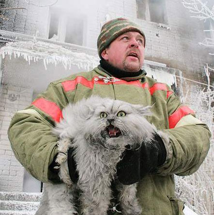
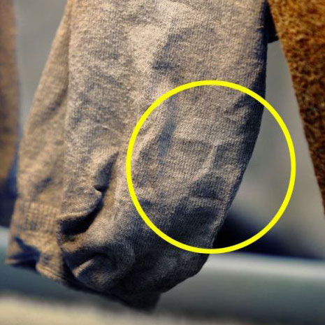
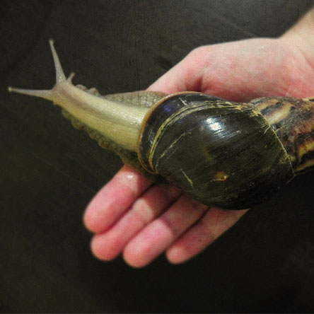

Every February, The Portland Jazz Festival is a celebration of jazz, Black History Month, and the City of Portland, Oregon. We celebrate Black History Month with a series of jazz education and outreach programs that extend into Portland’s schools and community centers. Throughout the Festival schedule, there are dozens of ways to experience jazz, through performances, both paid and free, lectures, films, exhibitions and jam sessions. read more
Scientists Discover Mole Rat Species
Anna Tanaka
3rd Nov
The naked mole rat (Heterocephalus glaber) also known as the sand puppy or desert mole rat, is a burrowing rodent native to parts of East Africa and the only species currently classified in the genus Heterocephalus.[2] It was once thought to be one of only two eusocial mammals (the other being the Damaraland mole rat) but this classification is controversial owing to disputed definitions of 'eusociality' as well as the existence of other mammals that satisfy the original definition of Wilson (1971).[3] It has a highly unusual set of physical traits that enables it to thrive in an otherwise harsh, underground environment, including a lack of pain sensation in its skin and a very low metabolism. read more
Are Space Aliens Real?
Doug Atlas
4th Nov
Extraterrestrial life (from the Latin words: extra ["beyond", or "not of"] and terrestris ["of or belonging to Earth"]) is defined as life that does not originate from Earth. It is often also referred to as alien life, or simply aliens (or space aliens, to differentiate from other definitions of alien or aliens). These hypothetical forms of life range from simple bacteria-like organisms to beings far more complex than humans.
The development and testing of hypotheses on extraterrestrial life is known as exobiology or astrobiology; the term astrobiology, however, includes the study of life on Earth viewed in its astronomical context. Many scientists consider extraterrestrial life to be plausible, but there is no conclusive evidence for its existence. Since the mid-20th century, there has been an ongoing search for signs of extraterrestrial life, from radios used to detect possible extraterrestrial signals, to telescopes used to search for potentially habitable extrasolar planets. It has also played a major role in works of science fiction. read more
Today's Top Stories
Fireman, Robert Redfin saves cat. Photo by: Cesaer Gonsalez
Fireman Saves Cat from House Fire
She is pregnant; he had just saved her from a fire in her house, rescuing her by carrying her out of the house into her front yard, while he continued to fight the fire. When he finally got done putting the fire out, he sat down to catch his breath and rest. read more
Jesus Face pictured on sock above. Photo by Marrisa Kline
Jesus Face Discovered on Sock
Face of Jesus found in sock by London woman doing laundry
Sarah Crane was shocked to find the face of Jesus in the sole of a sock she had just hung out on the washing line to dry. It might have been a case of divine intervention... read more
African land Snail crawls across owners hand. Photo by Uthembi Roolas
Snails and Slugs Make Good Pets
You may be interested in keeping your own pet slugs or snails. The easiest way to do so is to adopt a CyberSlug for your webpage, but you may want to keep a real one as a friend for a while. Here you will find brief instructions on keeping pet slugs, or their cousin mollusk, the snail. read more
Recent Local Podcasts
By reporters Amir Aghelnejad and A. Travis Corry
Thurs Oct 4th
Today's episode: we discuss the future of online publications and stuff.
User Comments
Lisa Gouldlisa.gould7684@ymail.com09/03/2012Great reading! Thank you Econ News... I would like to see more articles from Chef Boullion. I'm enjoying the keylime pie recipe with friends.
{kind=link}
{kind=link}
{kind=link}
User Comments